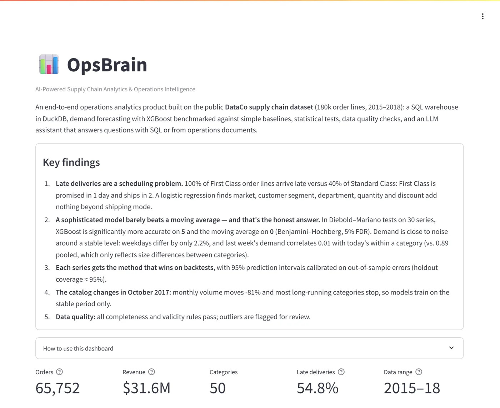
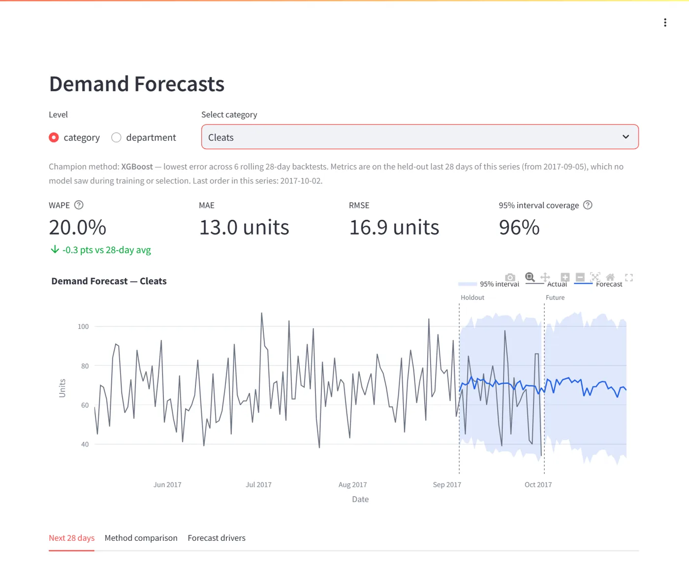
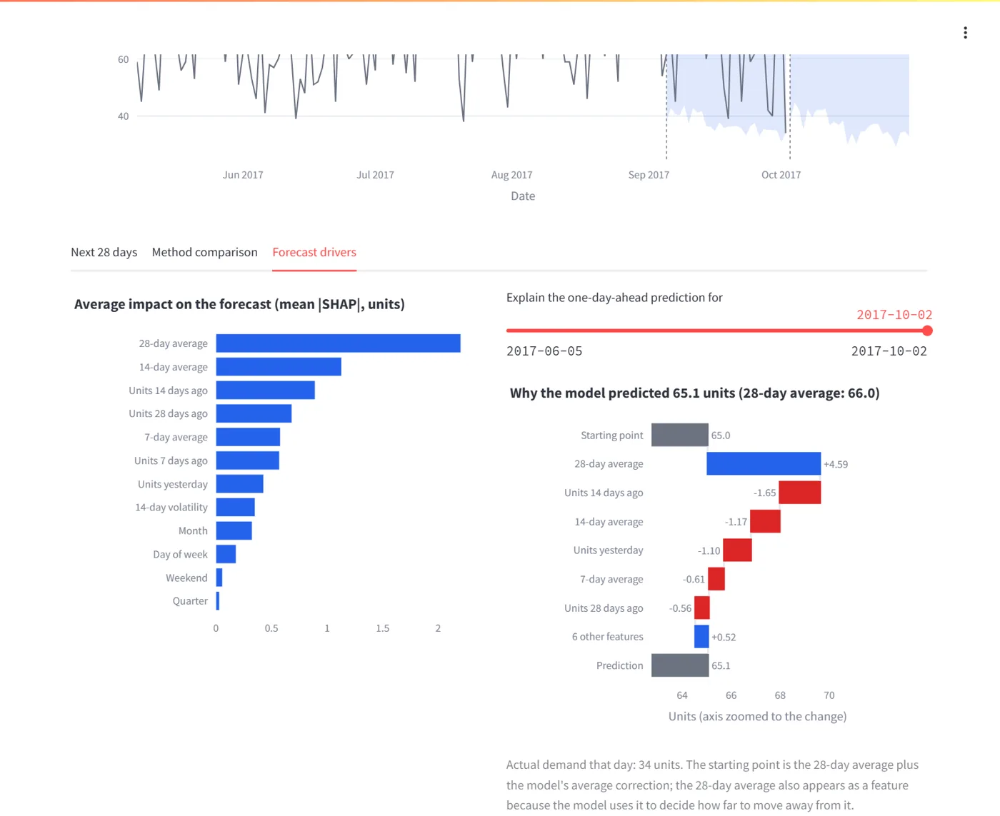
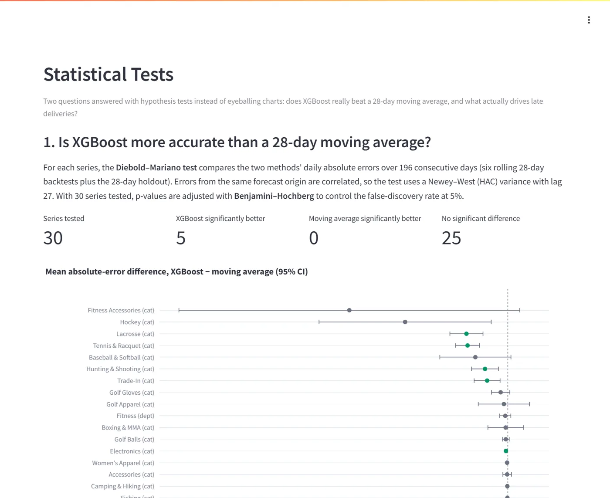
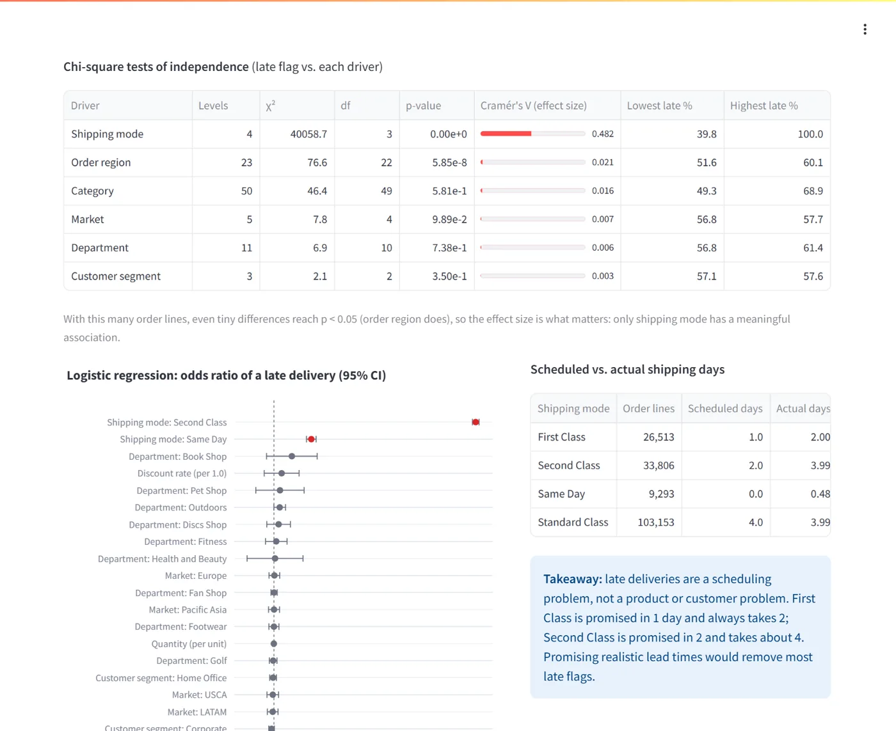

Portfolio project · Raguraja Krishnan Natarajan Mangaleshwaran
OpsBrain
An end-to-end supply chain analytics product on 180,000 real-world-style order lines: a SQL warehouse, demand forecasting benchmarked with significance tests, a statistical analysis of late deliveries, data quality checks, and an LLM assistant that answers questions with SQL or from operations documents.
The demo is hosted on Posit Connect Cloud and may take about 20 seconds to wake up on first visit.
Key findings
Every number below is computed from the data and shown in the dashboard.
Promised in 1 day, shipped in 2. Logistic regression: shipping mode explains late deliveries; market, segment, department, quantity and discount add nothing (LR test p = 0.71).
Diebold–Mariano tests (Newey–West errors, Benjamini–Hochberg FDR) vs. a 28-day moving average. No significant difference on 25; the average never wins significantly.
Demand is close to noise around a stable level (0.89 pooled only reflects size differences), which is why the honest answer is a per-series champion, not a bigger model.
Intervals calibrated on out-of-sample backtest errors at each horizon, then checked on a 28-day holdout no model saw.
Inside the dashboard





What's in the project
SQL data pipeline
- DuckDB warehouse with Snowflake-style window functions
- Dense daily demand, leakage-free lag features
- PII removed; canceled and fraud orders excluded
- 16 data quality rules from a written standard
Forecasting
- XGBoost vs. moving average vs. seasonal naive
- Optuna tuning, six rolling backtests, 28-day holdout
- Champion per series; calibrated 95% intervals
- MLflow tracking and SHAP explanations
Statistics
- Diebold–Mariano tests with HAC standard errors
- Benjamini–Hochberg multiple-testing control
- Chi-square tests with Cramér's V effect sizes
- Logistic regression and likelihood-ratio test
Gen AI assistant
- Router sends questions to text-to-SQL or RAG
- SQL sandbox: one read-only SELECT, no file access
- RAG over 7 SOPs with file and section citations
- Google Gemini via LangChain; local embeddings
Data product
- Six-page Streamlit dashboard on Posit Connect Cloud
- Forecast health alerts against planning targets
- Reproducible EDA report in Quarto
Engineering
- 74 tests, incl. synthetic-data pipeline and model tests
- GitHub Actions: lint, coverage gate, Docker build
- Docker image; data bundle for one-click deploys